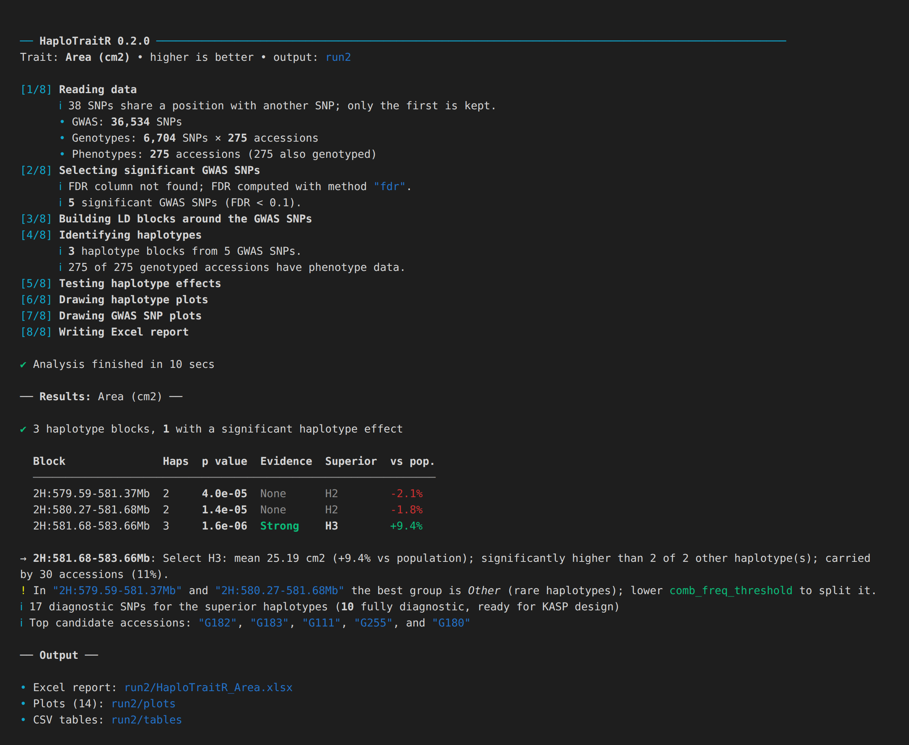
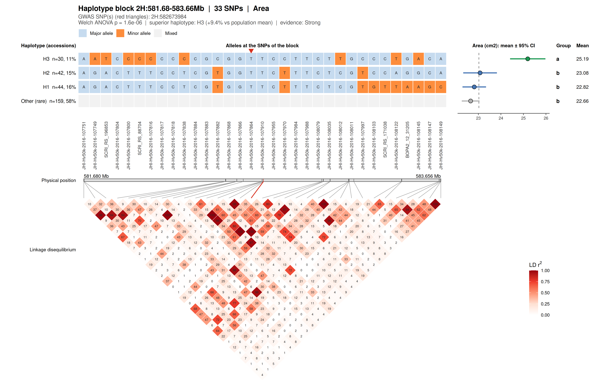
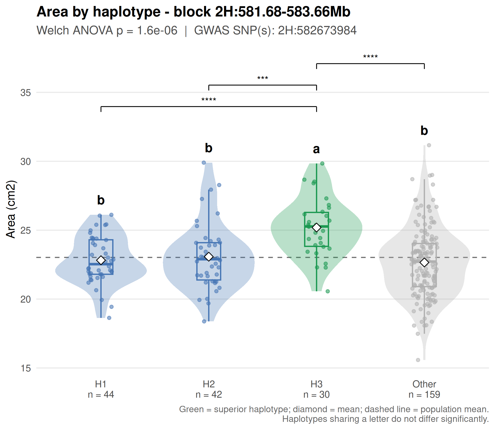
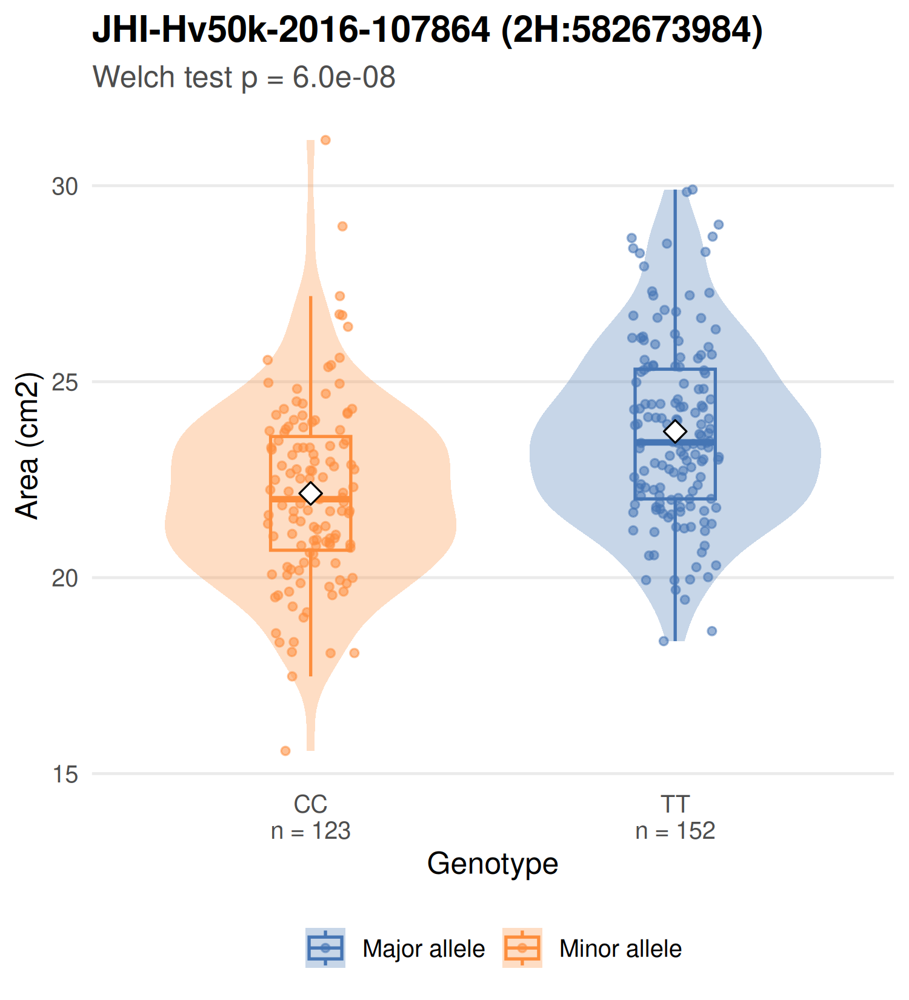
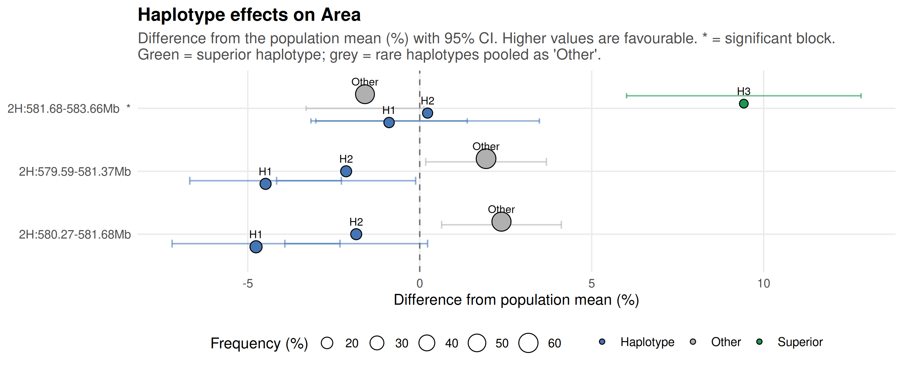
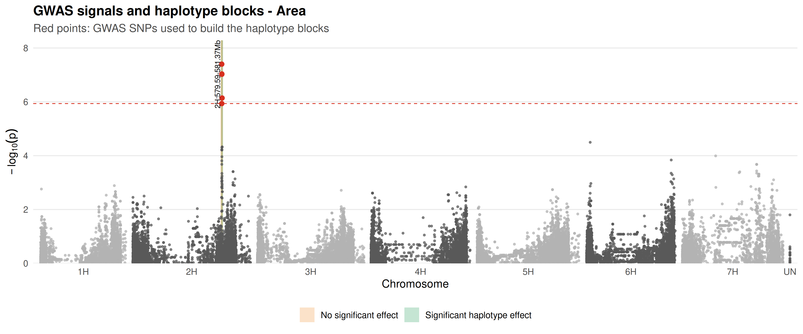

HaploTraitR
From GWAS hits to breeding decisions.
Haplotype-based trait analysis for plant breeders, in one R function call.
How it works • Installation • Quick start • What you get • Reading the results • Team
✨ Why HaploTraitR?
GWAS points to single SNPs. Breeders select on haplotypes, the combinations of alleles inherited together. HaploTraitR bridges the two and answers the questions a breeder asks next:
🧬 Which haplotypes?Builds haplotype blocks (SNPs in linkage disequilibrium) around every significant GWAS SNP and identifies the haplotypes H1, H2, … carried by your accessions. |
🏆 Which one is better?Tests each haplotype’s effect on the trait, gives letter groups and 95% confidence intervals, and names the superior haplotype with a plain-language recommendation. |
🎯 How do I select it?Lists the diagnostic SNPs that tag the superior haplotype. These are ready-made candidates for KASP assays and marker-assisted selection. |
🌱 Which lines do I cross?Ranks candidate parents by the number of superior haplotypes they carry, including genotyped lines that were never phenotyped. |
📦 Installation
install.packages("remotes")
remotes::install_github("AlsammanAlsamman/HaploTraitR")[!TIP] HaploTraitR uses only ggplot2, openxlsx and cli (which comes with ggplot2). It has no compiled code, so it installs on Windows, macOS and Linux without Rtools or a compiler.
🚀 Quick start
library(HaploTraitR)
results <- run_haplotraitr(
gwas = "my_gwas_results.csv", # marker, chromosome, position, p-value
genotypes = "my_genotypes.hmp.txt", # HapMap (.hmp.txt) or VCF (.vcf / .vcf.gz)
pheno = "my_phenotypes.tsv", # first column = accession, then one column per trait
trait = "Yield",
unit = "t/ha",
outfolder = "results_yield",
higher_is_better = TRUE # FALSE for e.g. disease scores or days to heading
)Try it now with the barley example data that ships with the package:
ex <- function(f) system.file("extdata", f, package = "HaploTraitR")
results <- run_haplotraitr(
gwas = ex("gwas_area_ann19.csv.gz"), genotypes = ex("Barley_50K.tsv.gz"),
pheno = ex("area_ann19.tsv"), trait = "Area", unit = "cm2",
outfolder = "barley_example", config = list(fdr_threshold = 0.1)
)The console guides you through every step and ends with a colour-coded summary:

My GWAS file uses other column names
Tell HaploTraitR which columns to use:
run_haplotraitr(..., config = list(rsid_col = "Marker", chr_col = "Chr",
pos_col = "Pos", pval_col = "P.value"))I have several traits
Call run_haplotraitr() once per trait, each with its own GWAS file and output folder:
for (trait in c("Yield", "Height", "Heading")) {
run_haplotraitr(gwas = paste0("gwas_", trait, ".csv"), genotypes = "panel.hmp.txt",
pheno = "traits.tsv", trait = trait, outfolder = paste0("results_", trait),
higher_is_better = trait != "Heading")
}📊 What you get
Everything is written to your output folder. Start with the Excel report.
| Output | What it shows | |
|---|---|---|
| 📗 | HaploTraitR_<trait>.xlsx |
Formatted report with superior haplotypes highlighted, see the sheets below |
| 🗺️ | plots/genome_overview |
Manhattan plot with the haplotype blocks highlighted |
| 📈 | plots/haplotype_effects_summary |
Effect of every haplotype in every block (% vs population mean) |
| 🌱 | plots/candidate_accessions |
Top accessions and the superior haplotypes they carry |
| 🧬 | plots/haplotype_blocks/ |
Per block: haplotype alleles, trait mean ± 95% CI and the LD heat map |
| 🎻 | plots/haplotype_trait_plots/ |
Per block: trait distribution of each haplotype with letter groups |
| 🔬 | plots/gwas_snp_plots/ |
Per GWAS SNP: trait distribution of each genotype |
| 🗂️ |
tables/, LD_matrices/, parameters.txt
|
CSV copies of all tables, LD matrices and the settings used |
Excel report sheets
| Sheet | Content |
|---|---|
| Read me | What each sheet contains and how to interpret it |
| Block summary | One row per block: superior haplotype, effect, evidence and a recommendation |
| Haplotype effects | Accessions, frequency, mean, 95% CI, difference vs population and letter groups |
| Haplotype alleles | The allele of each haplotype at each SNP |
| Diagnostic markers | SNPs that tag the superior haplotype; fully diagnostic ones are KASP candidates |
| Candidate accessions | The haplotype every accession carries, ranked by superior haplotypes carried |
| Pairwise tests · GWAS SNPs · Parameters | Full statistics, the GWAS SNPs used and the settings |
Gallery
|
 Haplotype block. Alleles of each haplotype (top), trait mean ± 95% CI with letter groups (right) and LD between the SNPs (bottom). Red triangles mark the GWAS SNP. |
|
|
 Trait by haplotype. The superior haplotype is shown in green; letters give significance groups. |
 GWAS SNP. Trait distribution of each genotype at a significant SNP. |
|
 Effects across blocks. Difference of every haplotype from the population mean (%), with 95% CI. |
|
|
 Genome overview. GWAS signals with the haplotype blocks highlighted. |
|
📖 How to read the results
| Term | Meaning |
|---|---|
| H1, H2, … | Allele combinations carried by at least comb_freq_threshold (10%) of the accessions; H1 is the most frequent |
| Other | Rare combinations, plus accessions with too many missing calls |
| Letter groups | Haplotypes sharing a letter do not differ significantly; a is the best group |
| Evidence: Strong | The superior haplotype is significantly better than every other haplotype |
| Evidence: Moderate | It is significantly better than some of the others |
| Evidence: None | No significant difference: low priority for selection |
[!NOTE] If Other is the best group, the favourable variant is a rare haplotype. Lower
comb_freq_threshold(for example0.05) to separate it.
⚙️ Settings
All settings (see them in R with list_config())
Change settings with set_config() or with the config argument of run_haplotraitr().
| Parameter | Default | Meaning |
|---|---|---|
fdr_threshold |
0.05 | FDR threshold used to select significant GWAS SNPs |
dist_threshold |
1000000 | Window (bp) around each GWAS SNP |
dist_cluster_count |
5 | Minimum number of SNPs in a window / block |
ld_threshold |
0.3 | Minimum LD (r²) to link SNPs into a block |
comb_freq_threshold |
0.1 | Minimum frequency of a haplotype |
hap_max_missing |
0.2 | Maximum fraction of missing calls when assigning an accession to a haplotype |
t_test_method |
"t.test" |
"t.test" (Welch) or "wilcox.test"
|
p_adjust_method |
"holm" |
Correction for pairwise haplotype tests |
t_test_threshold |
0.05 | Significance level |
higher_is_better |
TRUE |
Direction of the favourable trait value |
plot_format / plot_dpi
|
"png" / 300 |
Plot file format and resolution |
Step-by-step workflow (for advanced users)
Every step of run_haplotraitr() is available on its own:
library(HaploTraitR)
set_config(list(phenotypename = "Area", phenotypeunit = "cm2", fdr_threshold = 0.1,
outfolder = create_unique_result_folder(location = "sampleout")))
ex <- function(f) system.file("extdata", f, package = "HaploTraitR")
gwas <- read_gwas_file(ex("gwas_area_ann19.csv.gz"))
hapmap <- readHapmap(ex("Barley_50K.tsv.gz")) # or readVCF("file.vcf.gz")
pheno <- read.delim(ex("area_ann19.tsv"))
gwas_sig <- filter_gwas_data(gwas) # significant GWAS SNPs
windows <- getDistClusters(gwas_sig, hapmap) # SNPs near each GWAS SNP
LDsInfo <- computeLDclusters(hapmap, windows) # LD (r2) matrices
blocks <- getLDclusters(LDsInfo) # LD blocks
haps <- convertLDclusters2Haps(hapmap, blocks) # haplotypes per block
haps <- getHapCombSamples(haps, hapmap) # accessions per haplotype
acc <- getSNPcombTables(haps, pheno) # accession x haplotype x trait
tests <- testSNPcombs(acc) # pairwise haplotype tests
summary <- summarize_haplotypes(haps, acc, tests) # effects, superior haplotypes
markers <- diagnostic_markers(haps, summary) # markers for MAS
ranking <- rank_accessions(haps, pheno, summary) # candidate parents
plot_haplotype_block("2H:582673984", haps, summary) # one block (by block id or GWAS SNP)
plotHapCombBoxPlot("2H:582673984", acc, tests) # trait by haplotype
plot_effect_summary(summary)
plot_candidate_accessions(ranking, summary)
plot_haplotypes_genome(gwas, haps, summary = summary)Method notes
- LD is the squared correlation (r²) between allele dosages, the standard unphased r².
-
Blocks: SNPs within
dist_thresholdof a GWAS SNP are linked when r² ≥ld_threshold. The connected group that contains the GWAS SNP is its block. GWAS SNPs that share a block are analysed once. -
Haplotypes are allele combinations above
comb_freq_threshold. An accession with a few missing calls (up tohap_max_missing) is assigned to the single haplotype that matches its observed alleles. -
Tests: Welch ANOVA (or Kruskal–Wallis) per block, then pairwise Welch t-tests (or Wilcoxon tests) with
p_adjust_methodcorrection. Letter groups use the insert-and-absorb algorithm. - The workflow diagram is drawn with JavaScript in
tools/flowchart/flowchart.html. Regenerate the PNG withtools/flowchart/render.sh.
👥 Team
|
Dr. Zakaria Kehel Genetic resources scientist and senior biometrician |
Dr. Andrea Visioni ICARDA Senior scientist |
Dr. Alsamman Alsamman ICARDA Bioinformatics consultant |
Dr. Outmane Bouhlal ICARDA Senior scientist |
|
Khaled Helmy ICARDA PhD student |
Tamara Ortiz ICARDA Bioinformatics consultant |
Doaa Korkar ICARDA PhD student |